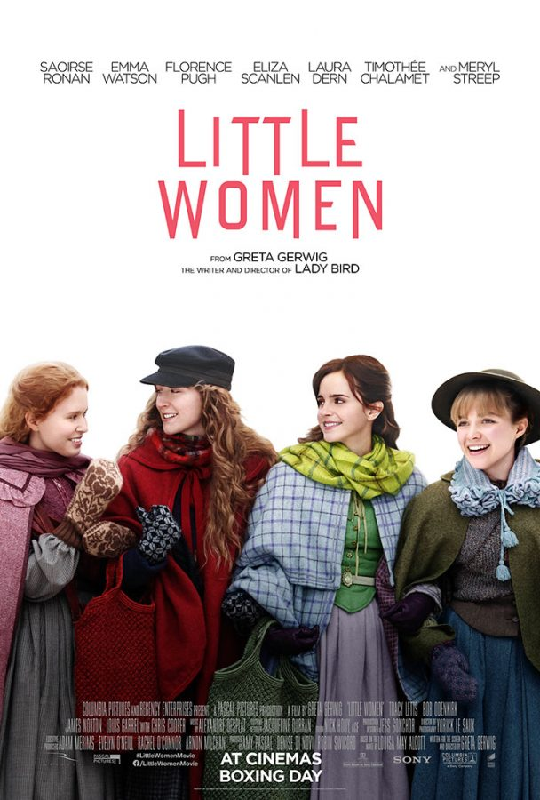

To kill a Mockingbird
To Kill a Mockingbird is a novel by Harper Lee. ... Many residents of Maycomb are racists and during the novel Atticus is asked to defend Tom Robinson, a black man wrongly accused of raping a white woman. Atticus takes on the case even though everyone knows he has little hope of winning.
.jpg)
Little Women
The March sisters live and grow in post-Civil War America. ... With their father fighting in the American Civil War, sisters Jo, Meg, Amy and Beth are at home with their mother, a very outspoken women for her time. The story tells of how the sisters grow up, find love and find their place in the world.
Pride and prejudice
In the early 19th century in the English village of Meryton, the arrival of wealthy bachelors, most notably Mr. Darcy (Laurence Olivier), stirs up the families with single daughters. Among those is the Bennet family, with five eligible daughters, including the spirited Elizabeth (Greer Garson) and her pretty older sister, Jane (Maureen O'Sullivan). As Mrs. Bennet (Mary Boland) aggressively tries to pair off her girls, Elizabeth crosses swords with the imperious Darcy.